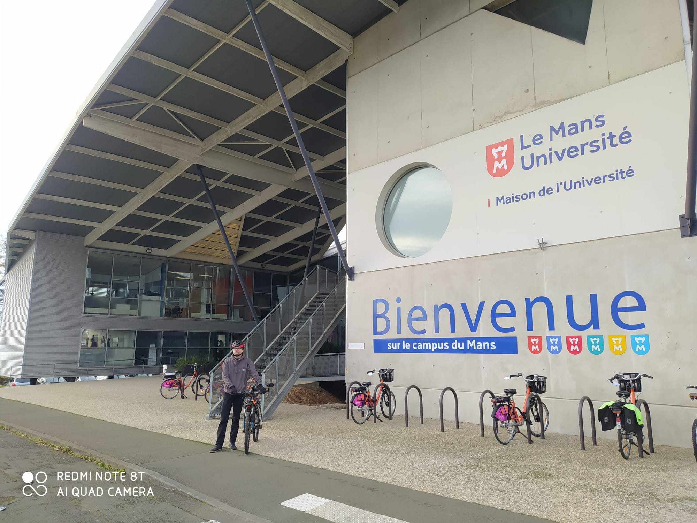

Posts récents
Double soirée : Suzy Storck & Désintégration
Pour raconter une histoire, on peut utiliser deux procédés, l’invention ou la description. Pour ces deux spectacles, Magali Mougel et Ahmed Djouder ont pris le parti d’utiliser le second ressort narratif

“Suzy Storck”, adaptée du texte de Magali Mougel, déjà rompu à l’exercice d’écriture de pièces de théâtre et recevant des commandes des quatre coins du monde, est une autrice associée au projet “Vive résonances”. Sa pièce parle de la violence conjugale d’un couple prolétaire d’une petite ville. Elle est mise en scène par Simon Delétang. La pièce a été montée pendant le covid et rejouée pour la première fois depuis quatre ans au Quinconce.
Double soirée : Suzy Storck & Désintégration
Pour raconter une histoire, on peut utiliser deux procédés, l’invention ou la description. Pour ces deux spectacles, Magali Mougel et Ahmed Djouder ont pris le parti d’utiliser le second ressort narratif
“Suzy Storck”, adaptée du texte de Magali Mougel, déjà rompu à l’exercice d’écriture de pièces de théâtre et recevant des commandes des quatre coins du monde, est une autrice associée au projet “Vive résonances”. Sa pièce parle de la violence conjugale d’un couple prolétaire d’une petite ville. Elle est mise en scène par Simon Delétang. La pièce a été montée pendant le covid et rejouée pour la première fois depuis quatre ans au Quinconce.
Music-hall Colette, repenser le genre du biopic
Les Biopics m’ennuient, pas dans le sens de barbant mais parce que c’est souvent une façon de surfer sur la popularité d’une personnalité sans avoir à faire une proposition artistique. Pourtant j’adore ça, j’ai une fascination pour les grands de ce monde, comme un rêve d’enfant, j’ai toujours envie de savoir comment ils ont fait pour réussir, pour devenir connu, qui ils sont. Vouloir percer une sorte de misère de la célébrité, c’est une idée naïve comme si une clef de la fame existait. Et pourtant les œuvres qui en parlent se repose souvent sur le simple fait de raconter un moment de l’histoire d’un personnage sans apporter de plus-value. Moins précis qu’un documentaire, le biopic théâtral ou cinématographie mets en scène la vie d’un personnage, ajoute une couche d’esthétique en assumant que trop rarement une vraie personnalité, la ou proposer une véritable vision ferait de l’ombre au sujet d’ont il est question.